MEGALIT Studio is a Stockholm production house that designs, delivers and runs the entire event. Festival-grade sound, lighting and immersive decor, built by the crew that made it, handled end to end at concierge level. The host does nothing but host.
Business inquiries: simon@megalit.studio
MEGALIT Studio turns any venue into a dance floor. At the core is a sound system built and refined over ten years for festival crowds who know what a real system feels like, backed by a deep stock of lighting, immersive decor and instruments. We handle everything from site analysis, delivery, installation and DJ station to operation and teardown, with lighting and decor programs that make the venue feel built rather than hired. Every event is full service and exclusive. One supplier, one contact, one invoice.
MEGALIT service packages are modular: audio, immersion, music, and on request bespoke experience design, bar and show services, photography and film. Based in Stockholm, delivering across Sweden, year-round, indoors and out.
For discerning hosts and companies who have stood in front of a real system and won’t settle for standard event experiences and two speakers on sticks.